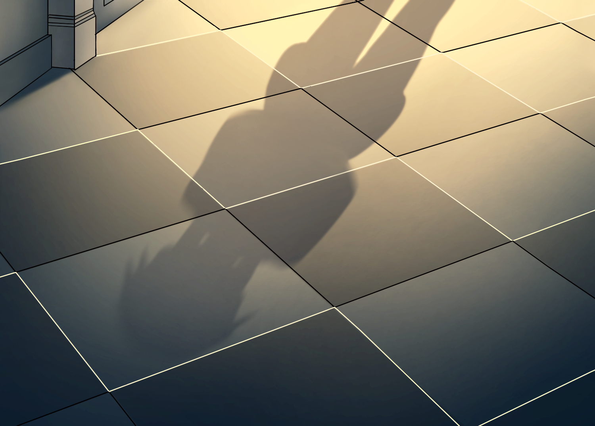
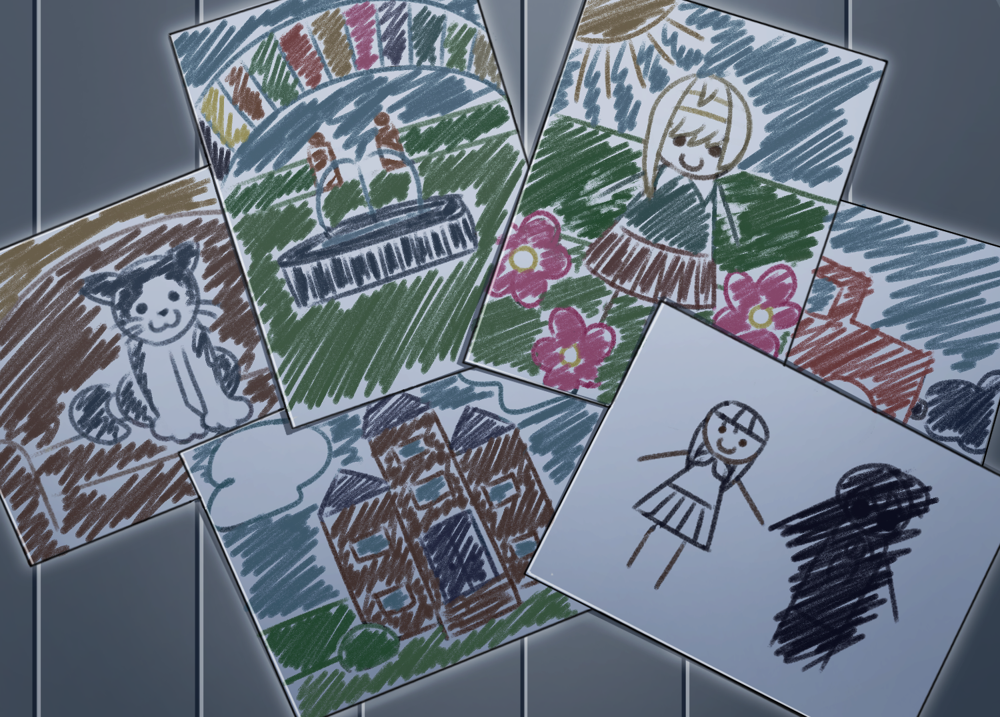

Kage Mansion
The old Kage family mansion is one of the most important locations in the story. Its halls contain forgotten memories, strange occurrences, and secrets connected to Hane's disappearance.
01 / The forgotten past
Some memories should stay buried.
Years after Hane Kage mysteriously disappears, his childhood friend Aishi returns to the old Kage family mansion searching for answers.
But the mansion is no longer the place he remembers. Familiar faces return, unfamiliar people appear, and a mysterious Shadow seems to know more about Hane than anyone should.
HANE KAGE: VEILED is an independent animated series combining psychological mystery, dark fantasy, supernatural elements, and drama.
The story follows Aishi, who returns years after the mysterious disappearance of his childhood friend, Hane Kage.
As Aishi searches for answers, strange phenomena begin to emerge, revealing forgotten memories and secrets connected to Hane's past. Somewhere within the mystery, a strange Shadow watches from the darkness.
02 / Faces behind the veil
Everyone remembers a different truth.
The absent heart
03 / Places and relics
Every corner holds a secret.
“The world of HANE KAGE: VEILED explores the boundaries between memory, imagination, identity, and reality.”
The old Kage family mansion is one of the most important locations in the story. Its halls contain forgotten memories, strange occurrences, and secrets connected to Hane's disappearance.

A mysterious supernatural presence whose connection to Hane remains unknown.

Childhood creations that begin appearing in ways that should not be possible.
An old personal record containing memories and emotions that may hold the key to the past.
Fragments of the past begin appearing throughout the story.
04 / Chapter records
The story has just begun.
05 / Production archive
Fragments from beyond the curtain.
06 / Moving pictures
Something has been waiting in the darkness.
07 / Latest transmissions
Messages from behind the veil.
08 / Production record
The voices and hands behind the story.